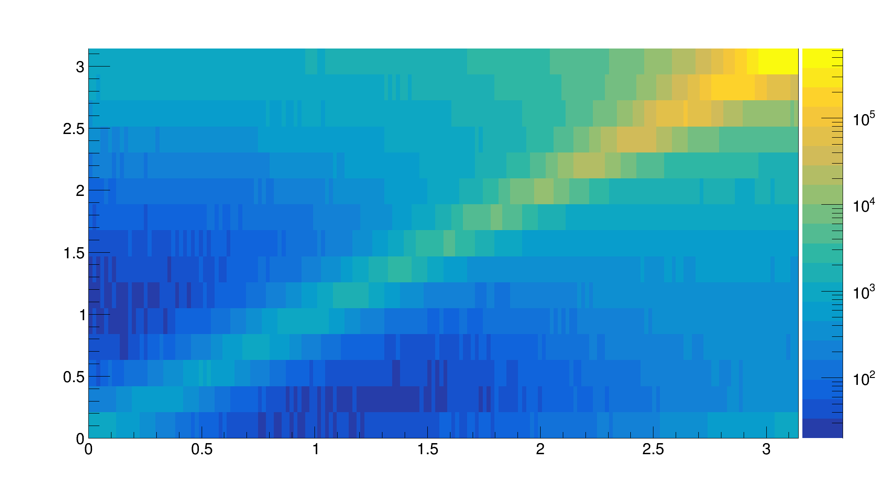
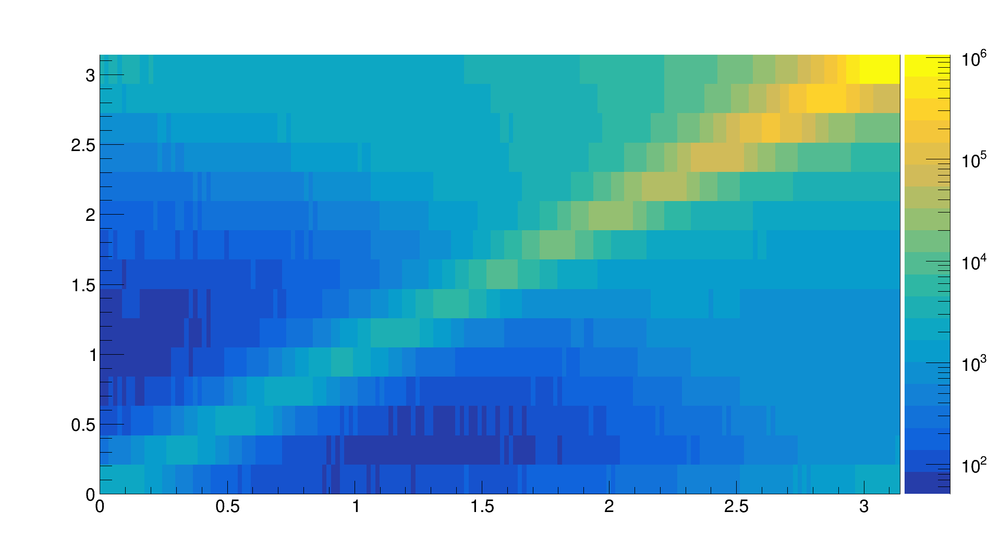

Introduction
Azimuthal angular decorrelation measurements have been extensively studied because it
is one of the preferred channels to study perturbative QCD, soft-gluon radiation and its
implications looking for physics beyond the standard model. Several decorrelation meas-
urements of two jets have been performed in hadron collisions at a large center-of-mass
energy [1–3]. In these collisions, the azimuthal decorrelation angle ∆φ is equal to π (back-
to-back events) in the extreme case when the two jets are produced with equal transverse
momenta and there is no soft-gluon radiation. Recent pQCD calculations have been able
to provide excellent description of the data in high-energy hadron collisions [4]. Theoret-
ical calculations of lepton-jet decorrelation rely on simplified calculation compared to the
counterpart in hadron collision [5]. New azimuthal angular decorrelation measurements
with the HERA collider in deep inelastic scattering (DIS) are presented in this analysis.
In this lepton-proton type of collider, events will deviate from ∆φ ∼ π due to higher order
gluon radiation and the intrinsic transverse momentum of the struck parton in the proton,
providing a way to study transverse momentum distribution (TMDs) and its evolution in
squared four-momentum transfer Q2. Additionally, the kinematic coverage at HERA
is capable to reach lower values of Bjorken-x (xBj ), which provide valuable information in
the study of the nucleon structure and will complement previous measurements at large
center-of-mass energy, where pQCD calculation has shown good agreement with the data.
The relative low energy measurements at HERA will test the limits and/or reach of the
perturbative calculation. With the possible construction of a new electron ion collider
(EIC) in USA, the interest looking into lepton-proton collision data have been growing
both from the theory and experimental community.
Event selection
This analysis was performed with data taken during HERA II period with electron collision
in the years 2004-2006, corresponding to an integrated luminosity of 189 pb−1,
and during the years 2006-2007 for the positron period with 143 pb−1.
During these periods, the lepton energy was Ee = 27.5 GeV collided with protons of an energy 920 GeV,
corresponding to a centre-of-mass energy √s = 318 GeV.
The selection of neutral current (NC) events was perform in a similar manner that previous
ZEUS analysis of jets in DIS [6, 7]. The cuts used in this analysis are the following:
- 10 GeV2 < Q2 < 350 GeV2
- yjb > 0.04
- yel < 0.7
- |zvtx| < 40 cm
- 45 < E − pz < 65 (both calorimeter and Zufo)
- pT / √ET < 2.5 (of the calorimeter)
- Lepton Energy E > 10 GeV
- 140⚬ < θlepton < 180⚬
- Lepton position x2 + y2 > 20 cm2
- Hadronic energy inside cone centred on electron has to be smaller than 10% of total energy in cone
- Use lepton with highest probability and Prob > 0.9
- Trigger SPP02 for 0405e
- Trigger SPP09 for 06e and 0607p
- Jet transverse energy and momentum ET > 2.5 GeV and PT < 30 GeV
- Jet |η| < 1
The same analysis procedure and cuts were used with ARIADNE Monte Carlo (MC) sample.
This analysis uses jets clustered with massive kt-jet algorithm [8], with jet resolution parameter R = 1.
Monte Carlo Simulation
The NC DIS events were generated with DJANGOH 1.6 [9].
The ARIADNE 4.12 colour-dipole model [10] was used for parton showering.
The Lund string model was used for hadronization, as implemented in JETSET 7.4.1 [11].
Diffration processes were included in the simulation.
Control plots
Bin migration matrices
| |ηJet| < 1 |
-1.5 < ηJet < 1.8 |
|

|

|
Unfolding
TODO: add correlation matrices with statistical uncertainties only
Systematics
-
The energy of the measured scattered lepton was varied by its known scale uncertainty of ±2% [6].
-
The jet energy scale was varied ±4% for values of ETjet < 10 GeV
and ±2.5% for ETjet > 10 GeV [6]
-
Difference between Ariadne and Lepto.
- Breit frame ✗
-
The uncertainty due to the lepton selection cuts was estimated by varying the values of
the cuts within the resolution of each variable (Not shown in this study).
-
|ηJet| < 1
-
-1.5 < ηJet < 1.8
Final plots and conclusions
References
-
[1] Abazov, V. M. and others, Measurement of dijet azimuthal decorrelations at central
rapidities in p\bar{p} collisions at \sqrt{s} = 1.96 TeV, Phys. Rev. Lett.94, 221801 (2005).
doi:10.1103/PhysRevLett.94.221801.
arXiv:hep-ex/0409040.
-
[2] Khachatryan, Vardan and others, Dijet Azimuthal Decorrelations inppCollisions at
\sqrt{s} = 7 TeV, Phys. Rev. Lett.106, 122003 (2011).
doi:10.1103/PhysRevLett.106.122003.
arXiv:1101.5029.
-
[3] Aad, Georges and others, Measurement of Dijet Azimuthal Decorrelations in pp Collisions at √s = 7 TeV, Phys. Rev. Lett.106, 172002 (2011).
doi:10.1103/PhysRevLett.106.172002.
arXiv:1102.2696.
-
[4] Sun, Peng and Yuan, C. -P. and Yuan, Feng, Transverse Momentum Resummation for Dijet Correlation in Hadronic Collisions, Phys. Rev.D92, 094007 (2015).
doi:10.1103/PhysRevD.92.094007.
arXiv:1506.0617.
-
[5] Liu, Xiaohui and Ringer, Felix and Vogelsang, Werner and Yuan, Feng, Lepton-jet correlations in deep inelastic scattering at the electron-ion collider, Phys. Rev. Lett.126122, 192003 (2019).
doi:10.1103/PhysRevLett.122.192003
-
[6] Abramowicz, H. and others, Measurement of isolated photons accompanied by jets in deep inelastic ep scattering, Phys. Lett.B715, 88 (2012).
doi:10.1016/j.physletb.2012.07.031.
arXiv:1206.2270.
-
[7] https://zeusdp.desy.de/ZEUS_ONLY/analysis/primer/DIS/index.html
-
[8] Ellis, Stephen D. and Soper, Davison E., Successive combination jet algorithm for hadron collisions, Phys. Rev. D48, 3160 (1993).
doi:10.1103/PhysRevD.48.3160
-
[9] Spiesberger, H, Django 1.6 Version 4.6.6 A Monte Carlo Generator for Deep Inelastic Lepton Proton Scattering Including QED and QCD Radiative Effects (2005).
http://wwwthep.physik.uni-mainz.de/~hspiesb/djangoh/djangoh.html.
-
[10] Lonnblad, Leif, ARIADNE version 4: A Program for simulation of QCD cascades implementing the color dipole model, Comput. Phys. Commun.71, 15 (1992).
doi:10.1016/0010-4655(92)90068-A.
-
[11] Sjostrand, Torbjorn, High-energy physics event generation with PYTHIA 5.7 and JETSET 7.4, Comput. Phys. Commun.82, 74 (1994).
doi:10.1016/0010-4655(94)90132-5.
-
[12] Schmitt, Stefan, TUnfold: an algorithm for correcting migration effects in high energy physics, JINST7, T10003 (2012).
doi:10.1088/1748-0221/7/10/T10003.
arXiv:1205.6201.
HOWTO
-
To apply event selection and generate intermediate root-files see README.
All needed files can be found in the "runner"-direcory.
Whole directory in a single archive: runner.tar.gz.
-
To produce control plots use ControlPlots.cpp.
usage: ./ControlPlots -d -m [--bin <ibin>]
where pathes specify root-file generated with desired multiplicity, and optional parameter ibin specifies a bin to do the plots for; otherwize plots will be made for integrated kinematic range.
You can also check out ./ControlPlots -h for more information on command line options.
-
In order to produce plots for normalized cross sections (with unfolding) use CrossSection.C.
compilation: g++ `root-config --cflags --libs` -lUnfold -lconfig++ -o CrossSection CrossSection.C
usage: ./CrossSection --pt|q2 -d <path-to-data.root> -m <path-to-MC.root> -t <path-to-MC-had.root> --sys <list-of-systematics>
where list-of-systematics is the list of pathes (separated with spaces) to mc-root-files generated with, e.g., biased cuts.
You can also check out ./CrossSections -h for more information on command line options.